45–60 minutes · twice weekly · leave at least two days between sessions
4 sets × 6–8 reps · Rest 2–3 minutes
| START 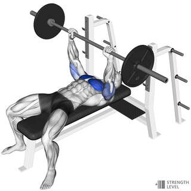 |
END 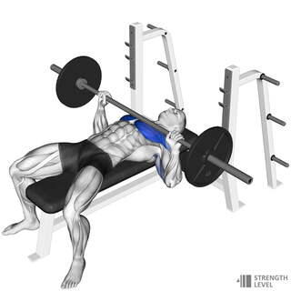 |
4 sets × 6–10 reps · Rest 2–3 minutes
| START 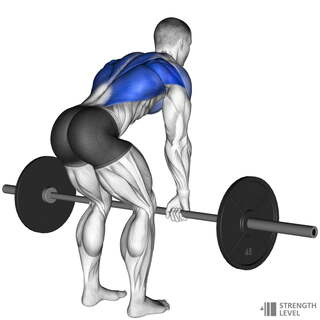 |
END 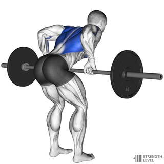 |
3 sets × 6–8 reps · Rest 2–3 minutes
| START 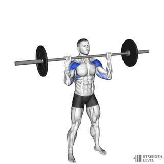 |
END 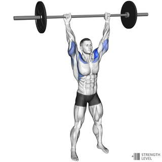 |
3 sets × 8–10 reps · Rest 60–90 seconds
| START 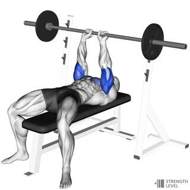 |
END 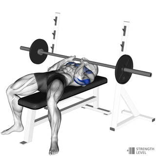 |
3 sets × 10–12 reps · Rest 60–90 seconds
| START 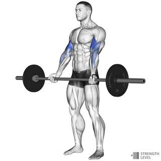 |
END 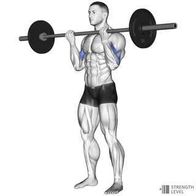 |
3 sets × 10–15 reps · Rest 60–90 seconds
| START 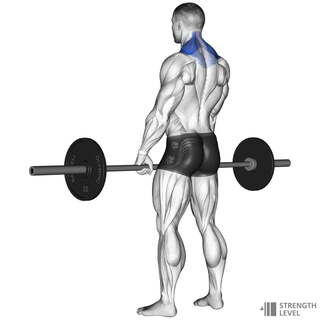 |
END 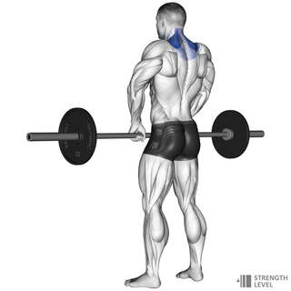 |
Choose a weight that leaves about two clean reps available. When you reach the top of the rep range on every set, add 1–2.5 kg next time.
Safety: Warm up first, use rack safety arms for presses, and stop if you feel sharp or unusual pain.
Static exercise references: Strength Level.
↑ Back to top